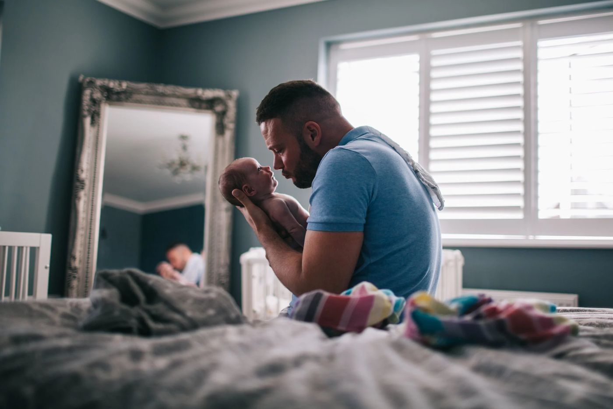
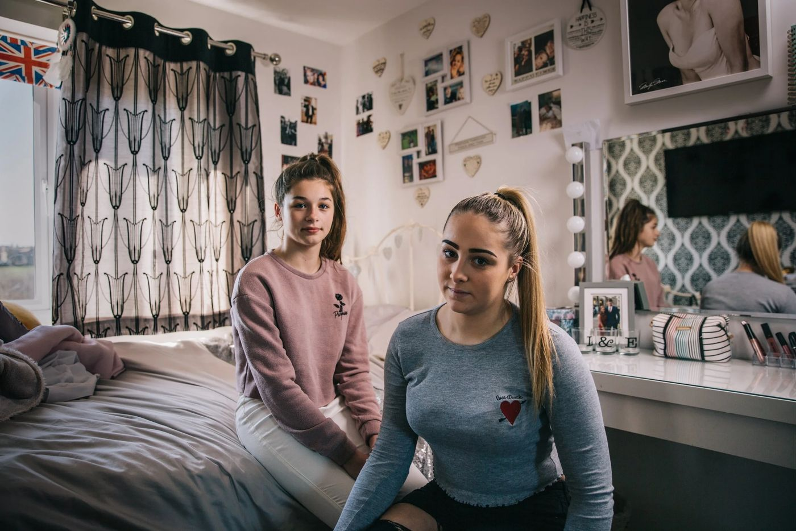
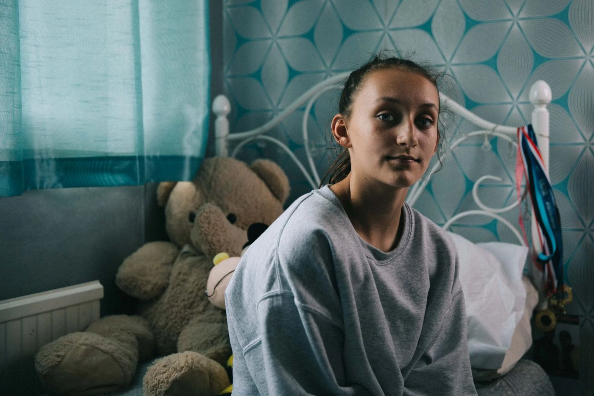

Stills







Producer, director and self-shooter. Seven years making prime-time factual and observational films for the UK's most-watched broadcasters
Harry is a documentary producer, director, DOP and designer based in Bristol and London. He specialises in human-interest stories, with a cinematic eye. His approach is sensitive, helping people tell their own stories authentically.
His credits include the BAFTA-nominated Educating Yorkshire, Ambulance, which won an RTS Award for his series, and the BAFTA-nominated Freddie Flintoff's Field of Dreams.
Documentary film
Camera operation
Photography
BBC One & Two
Channel 4
Netflix · Hulu · Apple TV+
Bristol & London
Travels anywhere




4 programmes
 Emmy®
Emmy®Leaving Neverland

Ambulance

3 programmes
I self-shoot and own all my own kit, from camera and lenses to lighting and sound. I turn up ready to work, which keeps a production simple and cost-effective.
Sony FX6 · DJI Ronin 4D · Lighting & sound package

I shoot observationally, working quietly so people relax and forget the camera is there. I've spent years filming on ambulances, in schools and in family homes, often with sensitive access.

I light and shoot interviews myself, with a natural look rather than something that feels staged. People settle quickly in front of the camera.

I record my own sound on the shoot, using radio mics, a boom and a mixer. That means clean dialogue in the edit without booking a separate recordist.

I shoot moving shots on a DJI Ronin 4D, from walk-and-talks to follows and reveals. It's a full cinema camera, so the picture stays stable and sharp.

I fly a drone for aerials and establishing shots. It adds scale to a sequence without the cost of a second unit.

I'm happy to travel, at short notice if needed, in the UK or abroad. I bring my own kit, so I'm self-sufficient wherever the shoot is.
I also build tools for film makers. Earwig is an on-set companion that lets you mark the moment as it happens, then carries your markers and selects straight into the edit.